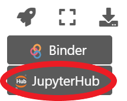

Answers: Lab Week 2 - Jupyterhub Tutorial¶
EOSC 211¶
Learning Objectives¶
Connect to Jupyterhub via the course website
Create, edit, and delete code cells and markdown cells in a Jupyter notebook
Assign data to variables
Execute code cells to do some calculations
Use comments and/or markdown cells to add annotations to your code
Save your work and submit an assignment via Canvas
Intro¶
Welcome to your first lab in EOSC 211! Here we will write our first bits of Python code, explore some of the features of Jupyter Notebooks, and learn how to save and submit your work for grading.
The URL for this course is -url-. Here you can view all of the notes, worksheets, labs, and assignments for each week of the course. If you are on the website and would like to open an assignment to work on your own copy of it, click the rocketship icon in the top right hand corner of the screen to launch JuptyerHub. After you sign in, Jupyterhub will open an interactive copy of the notebook which you can edit, download, and submit for grading.
{kind=link}
Why Python/Jupyterhub?¶

Python is a high level programming language, meaning it is comparatively easy for humans to read. Python programs are executed by a python interpreter, which takes python code, reads it into a processor (the CPU on your computer, or in our case, a Jupyterhub server) and returns a result. This process is repeated over and over for each line of code, often taking the result of one line and feeding it into the next.
Python is also open source, meaning there are no fees to download/use python, and anyone is free to add to the Python code base. This is a major reason for Python’s growing popularity in the scientific community, there are many add ons (called packages) developed by other scientists specifically for the type of programming we want to do in this course, with more being added every day!
Jupyter Notebooks are an IDE, or integrated development environment which have gained popularity amoung the science community for processing data, creating scientific figures, solving numerical equations, and sharing code. IDE’s are essentially advanced text editors containing features helpful for writing code (if you really wanted to, you could write all your code in Notepad or Microsoft Word then copy/paste it into a python interpreter somewhere, but we strongly recommend not doing this).
JupyterHub is a computational environment for running jupyter notebooks in the cloud, designed specifically for applications like teaching or collaborative research. The EOSC211 course hub is available online and requires no installation on your own machine. Later in the course, we will talk about installing python yourself, creating your own environments, and developing your own individual workflow.
Code Cells and Markdown Cells¶
Jupyter notebooks are divided into cells, which can be individually edited and run. To create a new cell, click Insert \(\rightarrow\) Insert Cell Below, or press [Alt] + [Enter] to run the current cell and create a new one below. After you create a cell, you can choose either Code (keyboard shortcut [Esc] + [y]) or Markdown ([Esc] + [m]) as the cell type. You can delete cells with Edit \(\rightarrow\) Delete Cells
{kind=link}
{kind=link}
{kind=link}
Code Cells¶
Code cells are where you can write, edit, and run Python Code. Text entered into code cells will be shown with syntax highlighting, with python reserved words shown in green, strings shown in red, and comments in blue. You can execute code cells by pressing [\(\blacktriangleright\) Run], or [Ctrl] + [Enter] (execute current cell), [Shift] + [Enter] (run current cell and select the next one), or [Alt] + [Enter] (execute current cell and create a new one below).
Try it yourself! Edit the cell below, replacing the comment (lines of code beginning with “#” are ignored by the python interpreter and not executed) with:
print("Hello World")
and press [Ctrl] + [Enter] to execute the code.
# your code here
print("Hello World")
Hello World
Congratulations, you have just written and executed your first Python code! The “Hello World” program is a long-standing tradition in computer programming as a first program in a new language.
Python has much more capability than just printing “Hello World”. You can write multiple lines of code in one cell, the python interpreter will execute each line of code in the order it appears, i.e.
print("Hello Earth")
print("Hello Ocean")
print("Hello Atmosphere")
Hello Earth
Hello Ocean
Hello Atmosphere
Text written in code cells needs to be syntactically correct in order to execute, i.e. it needs to contain a valid combination of reserved words, operations and variables that can be parsed by the python interpreter. Invalid code will raise an error:
print("Hello Arthur Dent")
Hello Arthur Dent
If there is something wrong with a code cell, the python interpreter stops execution and produces a traceback message. Traceback messages appear below a code cell and usually give you a helpful hint as to what is wrong and how to fix it. Some messages can be a bit cryptic; if this is the case, try searching stack overflow or another helpful coding site (many exist). After searching 3 different sites without success, ask the nearest classmate, professor, or TA for help.
Variables¶
Instead of just outputting things to the screen, we can also save data as a variable, and reference it throughout your code, like so:
planet = "Earth"
This tells the python interpreter: Find some space in computer memory, store the letters which form the word “Earth” there, and reference that word with a variable called planet (Note: this happens without outputting anything to the screen). Throughout the rest of your code, referencing the variable “planet” will result in the word “Earth”. If you change the variable to “Betelgeuse”, every reference to that variable will now produce “Betelgeuse”. Clever use of variables can save you time hunting through your code and replacing every instance of a word/number/value.
print(f"Welcome to {planet}")
print(f"Nice weather today here on {planet}")
print(f"{planet} will shortly be destroyed to make space for the new interstellar Vogon highway.")
Welcome to Earth
Nice weather today here on Earth
Earth will shortly be destroyed to make space for the new interstellar Vogon highway.
Cell Execution Order and Restarting the Kernel¶
Within a cell, lines of code are executed in the order they are written. Code cells will execute in any order you decide. The order in which cells are executed appears to the left e.g. In [7]: indicates that a particular cell is the seventh cell to be run in the notebook. Try executing the cells below in order:
cell 1, cell 2, cell 3
cell 3, cell 2, cell 1
Which value for my_field gets printed to the screen in either case?
# cell 1
my_field = "oceanography"
# cell 2
print(my_field + " is awesome!")
oceanography is awesome!
# cell 3
my_field = "atmospheric science"
my_field = "geology"
Finally, press the [\(\circlearrowright\)] button to restart the kernel and try executing cell 2 again. What happens? Restarting the kernel tells the python interpreter to forget all variables and start over from scratch. The [\(\blacktriangleright\blacktriangleright\)] button restarts the kernel then immediately executes each cell in order (top to bottom, or until it encounters an error and cannot continue).
Try it out! Edit the cells above (create new cells or copy/paste lines of code) so that when you press [\(\blacktriangleright\blacktriangleright\)], the resulting output to the screen is:
atmospheric science is awesome!
Math in Python¶
The Python core contains functionality for doing basic math. Later in the course, we will learn how to import further functionality for doing not-so-basic math. The syntax for math in Python is summarized below:
Operator |
Description |
Example |
Result |
|---|---|---|---|
|
addition |
|
|
|
subtraction |
|
|
|
negative number |
|
|
|
multiplication |
|
|
|
division |
|
|
|
raises a number to a power |
|
|
For more complex calculations involving several operators, the python interpreter will perform calculations in the order BEDMAS (brackets, exponents, division/multiplication, addiition/subtraction), just like you would do by hand.
Try it out! In the code cell below (or you can create multiple code cells, up to you!), solve the following equations:
A: \(2^2 + 9\)
B: \(2^2 + 9 \times 2\)
C: \((2 + 9)^2 \times 2\)
# your code here
a = (2 + 9)**2.
Math With Variables¶
Just like we could print variables to the screen, we can assign and reference variables within calculations. For example, the circumference \(C\) of a circle is:
where \(r\) is the radius of the circle and \(\pi = 3.14\). We can code this equation in python like so:
radius_of_planet = 6371 # km
circumference = 2 * 3.14 * radius_of_planet
print(circumference)
40009.880000000005
Markdown Cells¶
One of the big learning goals in this course is writing code that is well documented. It should be easy for another programmer (or your future self) to look at your code and understand what is happening in each code cell and why. A major reason we have elected to teach this course with Jupyter Notebooks is their ability to show nicely formatted commentary between snippets of executable computer code.
Unlike code cells, markdown cells don’t execute or produce outputs, they simply render plain text into nicely formatted paragraphs. The cell you are reading right now is written in markdown; double click on it to see the plain text before rendering. Press [Shift] + [Enter] to re-render the cell.
The main focus of this course is writing Python code, so you won’t be expected to learn every part of the markdown syntax (but feel free to make your notebooks/labs as fancy as you like, we encourage it!). You will need to be able to edit markdown cells in order to complete long answer questions, like so:
What is your favorite color?
your answer here
red
Saving and Submitting Assignments¶
As you create or edit a Jupyter Notebook, you can save your work by clicking File \(\rightarrow\) Save and Checkpoint (or [Ctrl] + [s]). This will save your notebook on the Jupyterhub server in the cloud. To download a notebook to your own computer, select File \(\rightarrow\) Download as \(\rightarrow\) Notebook (.ipynb).
It is very good programming practice to keep at least 2 copies of each notebook in at least 2 locations (e.g. on the jupyterhub server and on your laptop) and we highly recommend doing this to prevent losing work.
To hand in an assignment, download your final copy as a .ipynb and upload it via the link to that assignment on canvas
To hand in by the end of this lab¶
Write your answers in the cells below and submit your lab via Canvas
Question 1¶
What motivated you to sign up for this course? Are you most interested in Earth, Ocean, or Atmospheric Science? (or something else?)
(Double click to edit the markdown cell below, [Ctrl] + [Enter] to render)
your answer here
Question 2 (3 points)¶
We can calculate travel time \(t\) given distance \(d\) and speed \(v\) with
With \(t\) reported in hours, \(d\) in kilometers and \(v\) in kilometers per hour. Write code in the cell below to calculate the time in days required to bike along the equator of a planet of radius radius, using the variables assigned assigned earlier in this notebook. Assume you can maintain
an average speed of biking_speed. Make sure you produce a variable with the name time_in_days that contains the answer.
Press the [\(\blacktriangleright\blacktriangleright\)] button to run the whole notebook again, and make sure that the code still produces the correct output. (Note: the values for planet (ie the name), biking_speed (numerical value in kph) and radius (numerical value in km) and aren’t important important. Full marks are awarded for code that produces a sensible result with no errors)
# biking_speed = xx # km/h
# reference variables assigned in earlier cells to calculate travel time around "planet"
# and assign the result to a new variable "t"
biking_speed = 20 # km/hour
hours_per_day = 24.
biking_speed = biking_speed*hours_per_day # convert hours to days
time_in_days = circumference/biking_speed
print(f"It will take {time_in_days} days to ride a bicycle around {planet}")
It will take 83.35391666666668 days to ride a bicycle around Earth
assert(time_in_days > 0)
Helpful Terminology¶
Python: a high level programming language popular among scientists. Python code is saved with the extension .py and can be run on any computer with a python interpreter installed on it. We are using version the miniconda distribution, version 3.7 for this course.
Jupyter Notebooks: an Integrated Development Environment for writing python code that runs in a web browser (i.e. Chrome, Firefox). Notebooks are comprised of cells, which are either executable python code or rendered markdown text. Notebooks contain and execute python code, but are saved with the extension .ipynb
Jupyterhub: a computational environment for running jupyter notebooks in the cloud, designed specifically for applications like teaching or collaborative research. The EOSC211 course hub is available online and requires no installation on your own machine. Later in the course, we will talk about installing python yourself and developing your own individual workflow.